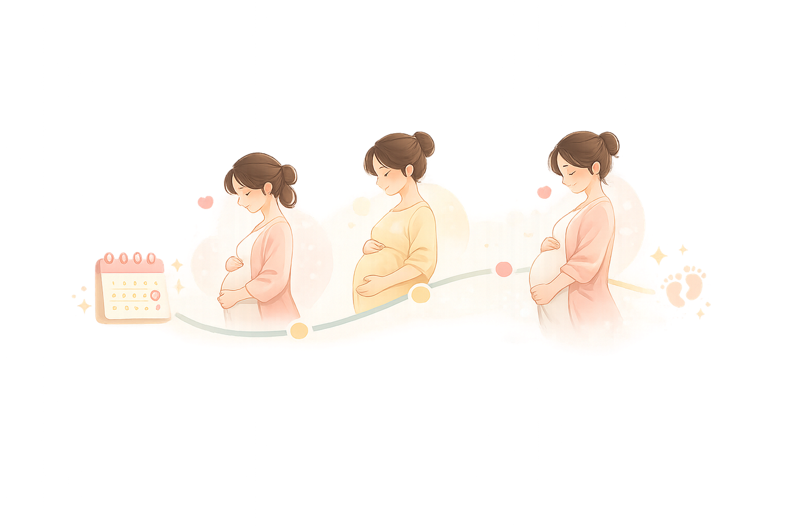
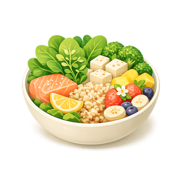
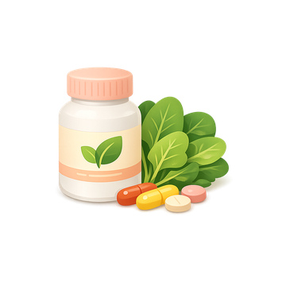
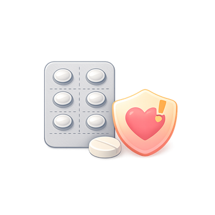
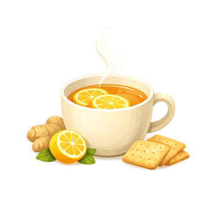

임신 초기·중기·후기·산후 타임라인에 맞춰 꼭 필요한 것들을 정리했어요. 모든 정보는 보건복지부·질병관리청·식약처·대한산부인과학회 등 공신력 있는 출처를 함께 표시했습니다.
임신 시기를 4단계로 나눠, 각 시기에 챙겨야 할 검사·접종·준비물을 정리했어요.

생활습관과 환경에서 꼭 지켜야 할 것들이에요.

Food리스테리아·수은 위험 식품은 피하고, 핵심 영양소는 충분히 챙기세요.
초콜릿·콜라·차 종류에도 카페인이 있어, 하루 총량으로 계산하는 게 중요해요. 같은 제품이라도 농도·브랜드에 따라 차이가 큽니다.
| 음료 · 식품 | 제공량 | 카페인 (대략) | 비고 |
|---|---|---|---|
| 아메리카노 | 355ml (톨) | 150~200mg | 한 잔으로 국제 기준(200mg) 거의 도달 |
| 캔커피 | 200ml | 70~100mg | 당분도 높은 편 |
| 콜라 | 350ml | 약 34mg | 제로콜라도 카페인 함유 제품 있음 |
| 다크초콜릿 | 30g | 20~35mg | 밀크초콜릿은 더 적음(~10mg) |
| 홍차 | 200ml | 40~70mg | 우려낸 시간이 길수록 ↑ |
| 녹차 | 200ml | 15~30mg | — |
| 아이스티 | 한 잔/병 | 20~45mg | 홍차 베이스, 제품별 편차 큼 |
| 버블티 (밀크티) | 한 잔 | 수십~100mg+ | 편차 매우 큼 홍차·녹차 베이스라 진하면 커피급 |
| 에너지음료 | 250ml | 60~80mg | '고카페인' 표시 확인 |
| 디카페인 커피 | 한 잔 | 2~15mg | 0은 아님 |
출처 · 식품의약품안전처(카페인 함량·표시규정) · 액체식품은 0.15mg/ml 이상 시 "어린이·임산부·카페인 민감자 섭취 주의" 표시 의무

Supplements두 영양제는 먹기 시작하는 시기가 달라요. 주차에 맞춰 챙기고 복용 주의사항도 확인하세요.

Medication자가 복용 전 반드시 의료진·약사와 상담하세요. 임의 중단·복용 모두 위험할 수 있어요.

Morning Sickness대부분 11–13주에 가장 심하고 22주경 약 90%에서 호전돼요.
주당 150분의 중강도 유산소 운동이 권장돼요. "대화는 가능하되 노래는 어려운" 정도가 중강도입니다.
시기별로, 정서적 지지와 실질적 분담 둘 다 중요해요.
입덧이 심할 땐 입맛을 살리는 음식을, 컨디션이 괜찮을 땐 영양을 채우는 음식을 남편이 챙겨주세요. 각 메뉴엔 만개의레시피 레시피 링크를 달았어요. 📖
레시피 출처 · 만개의레시피(10000recipe.com) — 각 메뉴의 📖 버튼으로 연결
보건복지부 「2025년 상반기 산후조리원 현황」 기준 광진구 내 민간 3곳입니다. (공공산후조리원 없음) 가격은 2주(14일) 기준이며, 신청 전 시설에 직접 확인하세요.
| 산후조리원 | 위치 | 일반실 | 특실 | 전화 |
|---|---|---|---|---|
| 궁 산후조리원 구의점 | 광진구 자양로 192 🔗 | 440만원 | 580만원 | 02-453-0640 |
| 광진아기맘미소 | 광진구 뚝섬로 503, 3층 🔗 | 400만원 | 530만원 | 02-447-0065 |
| 예그리나 | 광진구 구의로 28, 2층 🔗 | 확인 필요 | 590만원 | 02-457-6020 |
출처 · 보건복지부 전국 산후조리원 현황(2025.6 기준) · 가격은 변동·부가서비스 별도 가능, 시설 직접 확인 권장
🗺️ 서울시 전체 산후조리원 112곳 → 📊 구별 가격·후기 비교 →
국가 · 서울시 · 광진구 3단계로 나눠 정리했어요. 모든 금액은 2025~2026년 기준입니다.
| 정책 | 지원 내용 | 출처 |
|---|---|---|
| 첫만남이용권 | 첫째 200만원 / 둘째 이상 300만원 (국민행복카드 바우처, 사용기간 2년) | 복지로 |
| 부모급여 | 0세 월 100만원 / 1세 월 50만원 (매월 25일 지급) | 정부24 |
| 아동수당 | 만 8세 미만 월 10만원 (소득 무관 보편 지급) | 복지로 |
| 임신·출산 진료비 | 단태아 100만원 / 다태아 140만원 (분만취약지 +20만원, 국민행복카드) | 국민행복카드 |
| 배우자 출산휴가 | 20일 유급 (2025.2.23 확대, 최대 3회 분할, 출산일 120일 이내) | 정책브리핑 |
| 출산전후휴가 | 90일 (다태아 120일) · 미숙아 100일, 유산·사산 휴가 10일로 확대 | 생활법령 |
| 육아휴직 급여 | 1~3개월 월 250만원 / 4~6개월 200만원 / 이후 160만원 (사후지급금 폐지, 최대 1년6개월) | 고용노동부 |
| 난임부부 시술비 | 소득기준 폐지, 출산당 25회 (체외 신선 최대 110만원 등) | 정부24 |
| 고위험 임산부 의료비 | 본인부담·비급여 90%, 최대 300만원 (19대 고위험 질환, 소득 무관) | 정부24 |
| 산모·신생아 건강관리 | 건강관리사(산후도우미) 파견 바우처 (중위소득 150% 이하 등, 단가는 지침 참조) | 복지로 |
| 정책 | 지원 내용 | 출처 |
|---|---|---|
| 임산부 교통비 | 첫째 70만원 / 둘째 80만 / 셋째↑ 100만 (대중교통·택시·유류비 등) | 정보센터 |
| 서울형 산후조리경비 | 첫째 100만원 / 둘째 120만 / 셋째↑ 150만 (산후도우미 본인부담·의약품·한약 등) | 정보센터 |
| 둘째 출산 시 첫째 돌봄비 | 아이돌봄서비스 본인부담 90~100% 환급 (가구당 100만원 한도) | 몽땅정보통 |
| 친환경농산물 꾸러미 | 연 48만원 상당 (자부담 약 20% · 국비 매칭사업) | 농업기술센터 |
| 난임 시술비 (시 추가) | 소득기준 폐지, 출산당 25회 + 난자동결·한의약 난임·정난관복원 지원 | 정보센터 |
| 35세 이상 임산부 의료비 | 임신 회당 최대 50만원 (2026 확대, 임산부 바우처와 중복 불가) | 정보센터 |
| 다태아 안심보험 | 응급실·골절·입원 등 19개 항목 최대 1,000만원 보장 | 정보센터 |
| 정책 | 지원 내용 | 출처 |
|---|---|---|
| 첫돌(출산)축하금 | 1~3째 각 100만원 / 4째 200만 / 5째↑ 300만 (서울사랑상품권, 첫 돌 이후 6개월 내 신청) | 광진구청 |
| 엽산제 지급 | 임신 확진 후 ~ 12주까지 무료 (보건소 등록 시) | 광진구 보건소 |
| 철분제 지급 | 임신 16주 ~ 분만 전 6개월분 무료 | 광진구 보건소 |
| 임산부 단계별 검사 | 임신초기검사·쿼드검사(16~18주)·임신성당뇨·막달검사 무료 | 광진구 보건소 |
| 서울형 산후조리경비 접수 | 출생아 1인당 100만원~ 바우처 (보건소에서 안내·집행) | 광진구 보건소 |
| 산모·신생아 건강관리 | 건강관리사 가정방문(식사·모유수유·신생아 돌보기 등) | 광진구 보건소 |
국공립 어린이집은 대기 100번도 흔해요. 임신 중부터 입소대기를 거는 게 사실상 필수입니다.
광진구 임산부가 가장 많이 찾는 질문을 모았어요.
본 사이트는 다음 공신력 있는 기관의 자료를 바탕으로 작성되었습니다.